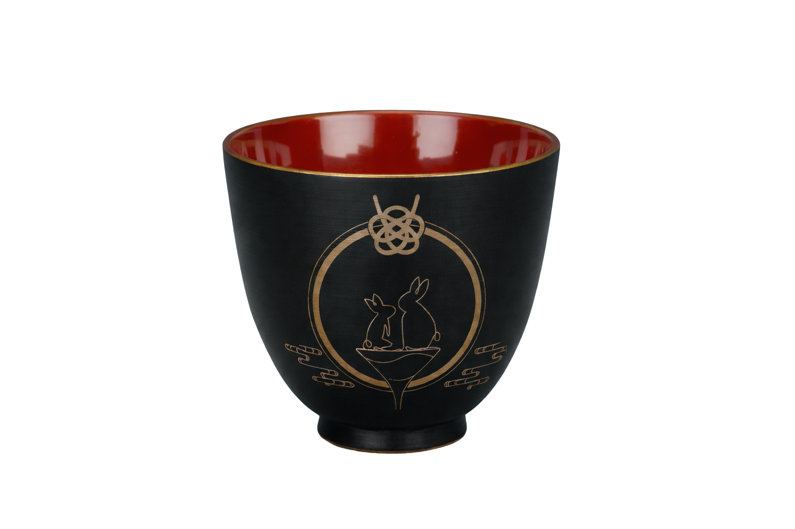

函館の酒 — 하코다테 술
유엔 바에서는 홋카이도·함관 지역의 지주(地酒)와 재패니즈 위스키를 중심으로 한 메뉴를 갖추고 있습니다. 현지 양조장의 사케, 지역 한정 위스키를 곁들인 오리지널 칵테일로 하코다테의 밤을 즐겨 보세요.

한 잔을 담는 그릇
유엔 바에서는 그 한 잔을 담기 위해 제작한 오리지널 글라스를 사용합니다. 온천과 술이 맞닿는 경계를 담는 그릇으로, 손에 잡히는 감과 입가에 닿는 선을 하나하나 맞춰 만든 잔입니다. 지주와 위스키, 칵테일을 이 잔에 담아 드립니다.